Tempered Hue
2024
I was Lead Game Designer and UX/UI Designer on this project. My responsibilities included game mechanics and systems, UI art, documentation, project management, and leadership.
- • Designed and prototyped systems, mechanics and character controls.
- • Created level blockouts in Unity for player hubs and instances.
- • Designed, prototyped and implemented unique minigames, systemic gameplay elements and visual effects.
- • Responsible for UX/UI design and implementation including user flows and interaction design.
- • Leadership and mentoring of junior staff, task delegation and management.
- • Programming and testing prototype mechanics.
Lead Game & UX/UI Design
- • Conceptualized, drafted and executed UX/UI user flows and interactions.
- • Pitch document earned $1.2 million in funding from the Canadian Media Fund.
- • Created and implemented all design for UI: reusable UI elements and panels, art, and icons.
- • Designed and prototyped game systems, mechanics, systemic features, economy, resources, trade, combat, character control, shop management, upgrading and minigames.
- • Authored and maintained documentation critical to Game Design including Pitch Documents, Mechanics, Systems, GDD and LDDs.
- • Worked collaboratively with internal art, design and programming teams to implement new features and systems.
- • Used Unity to integrate designs into prefabs and assets for use by all teams.
- • Using C#, programmed prototypes for mechanics.
- • Agile task delegation, bi-weekly sprint reviews, and backlogs.
Design for Tempered Hue
To differentiate from other games in the slice-of-life genre, I designed a 'GrimDark' action-adventure approach akin to Breath of the Wild. Combat, movement and exploration were chosen as focal points in the gameplay loop, and we moved from a farm to instead focus on a blacksmith shop, and the subterranean caverns that contained the ore you needed.
A bright and cheery UI would contrast harshly with the underground caverns the players would spend so much time exploring, and the feel of the narrative. I kept it dark and minimal to avoid overt distractions. I used a sparse palette, and focused on high readability over fancy visuals.
There would be few deviations from the genre norms in terms of UI structure, to avoid alienating players or creating points of frustration.
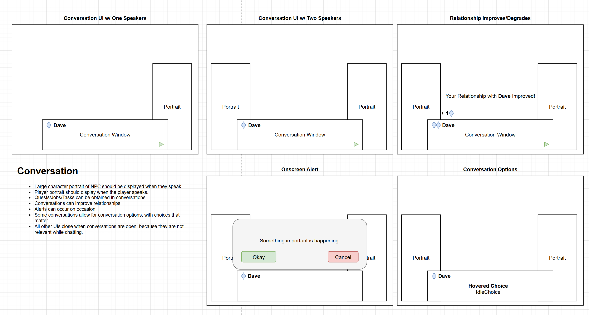
Initial wireframe mockups for conversation screens.
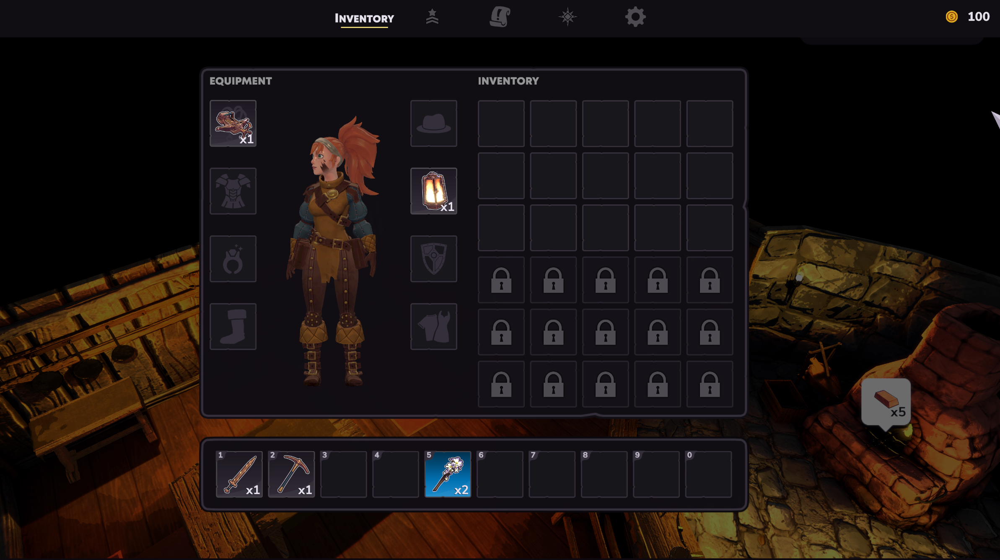
The player's inventory screen and core menu.
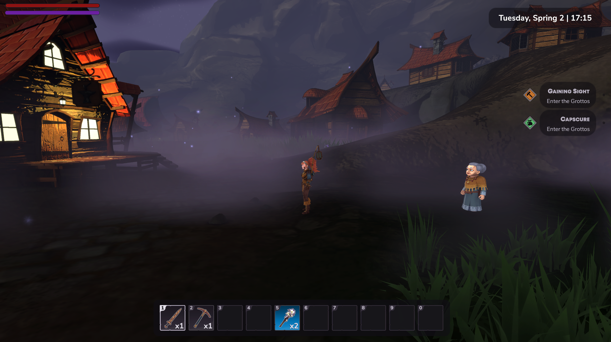
The game HUD while a player explores town.
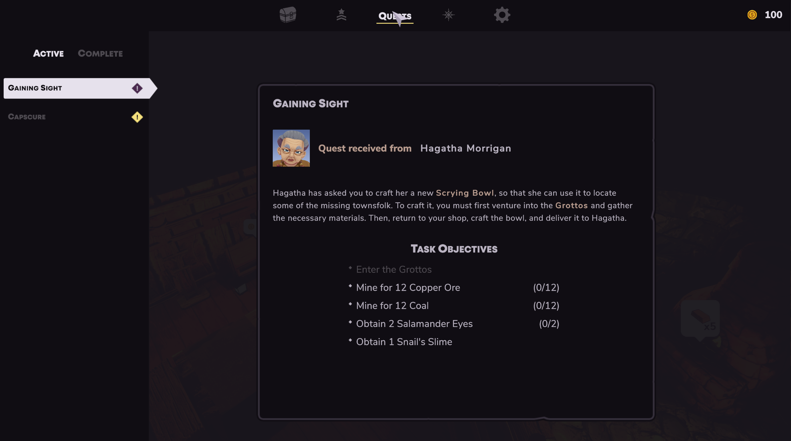
The Quest menu.
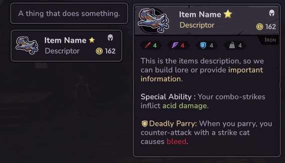
Tooltips in 3 different states.
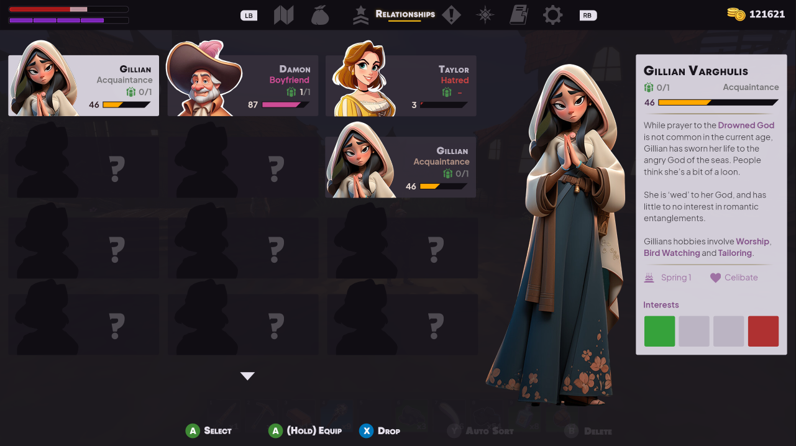
The relationship screen.

The main menu
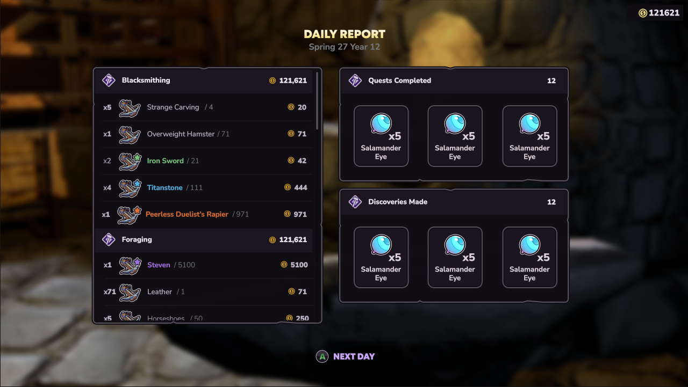
Each game day, a tally of collected resources is displayed.
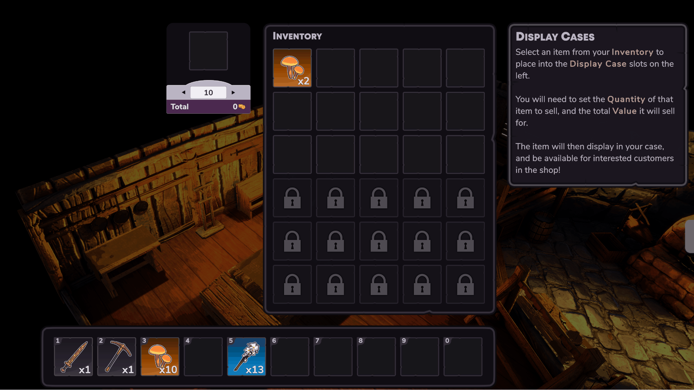
Placing items into a display case to sell to townsfolk.
From the start, the intent was exploration and combat similar to games like Breath of the Wild. An intuitive and responsive character controller that could adapt on the fly within potentially cramped cavernous spaces was non-optional. We needed to account for a number of abilities: Blocking, dodging, jumping, climbing, rappelling, grappling hook traversal, combat and more. Through iteration we had a solid implementation that provided all of our needs. Most importantly - it was fun.

A player mining an ore node.

A player fighting some rather irate geckos.

A player climbing and using the grappler, while stamina is used.
Players ran a shop with all the usual expectations: crafting, selling, conversation and upgrades. We also needed to include 5 minigames for blacksmithing, however. These needed to be quick, repeatable without fatigue or annoyance, and engaging. We settled on turning smithing into an "art" that a player would master over time, and I created mechanics and features for each station, gradually improving through the games exploration and crafting loops.
You'll find far greater detail within the provided documentation links at the bottom of this page, if interested.
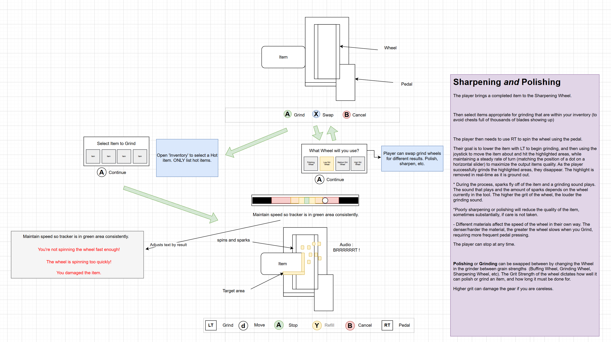
Initial minigame planning for the sharpening wheel.
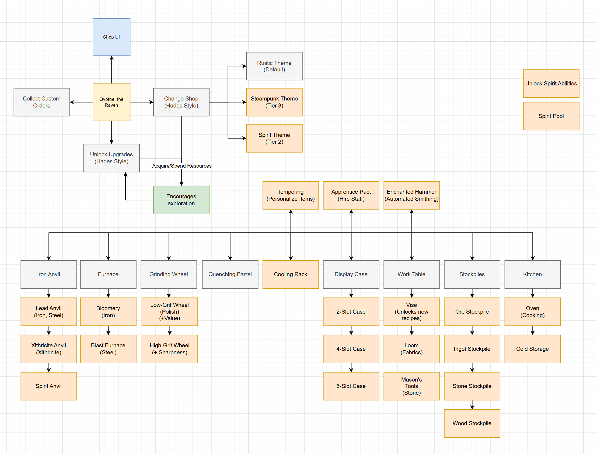
Blacksmith shop progression flow
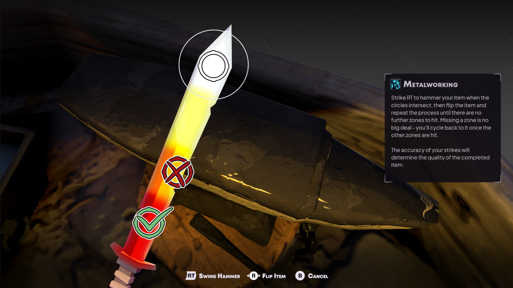
The Anvil Minigame. Players timed their hits over specific zones, with more accurate hits resulting in a higher quality item upon completion.
Verticality was critical - as spelunking explorers, players would climb, dig, grapple, and explore. The best method to achieve this and still keep every exploration fresh was procedural generation. However, I did not want randomness to be absolute - some areas had to be static. I created core cavern sections and layouts that could function as prefabs, and made templates that would function as 'cookie-cutters' - removing volume from a shape to create cavernous spaces, rather than inverting a shape.
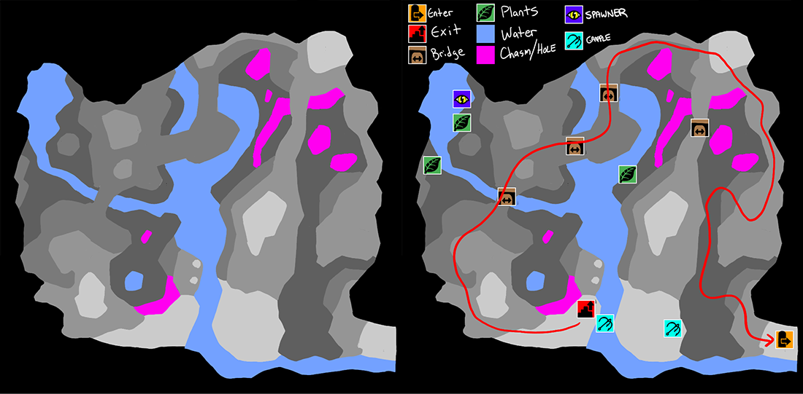
Right to left: A 'cookie-cutter' template to apply during procedural generation to a volume, and its map displaying the goldenpath, and key locations.
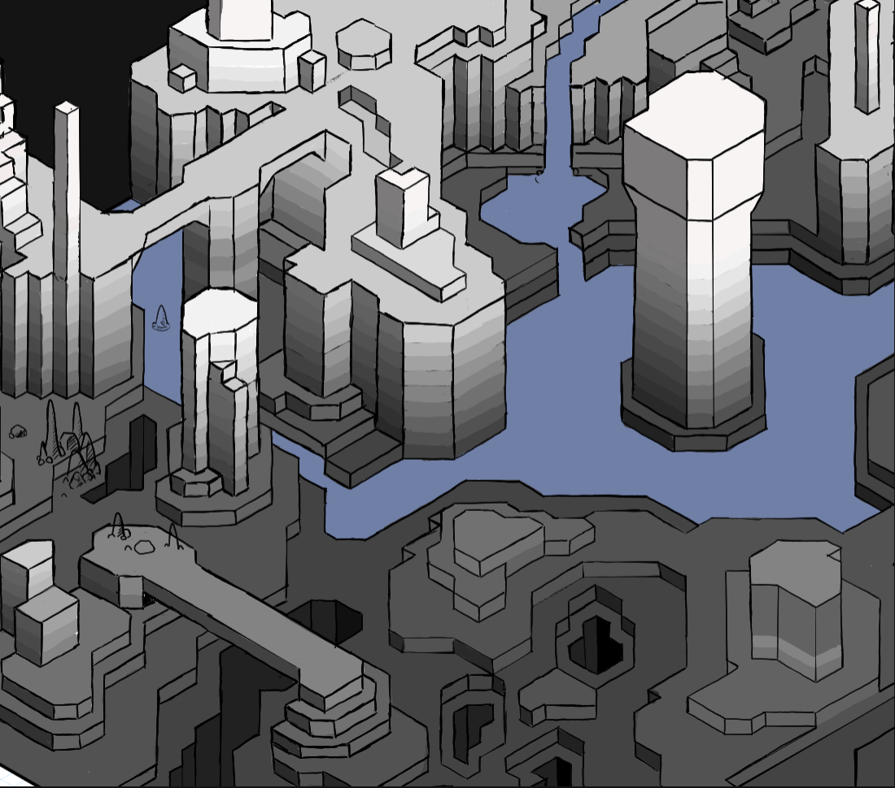
An isometric mockup for one of the cavern components.
The gameplay hub started completely ruined but for a few remaining structures. The rest had been crushed in a rockslide, and the player would gradually repair and clean things up to unlock additional areas. Because of narrative constraints, this progress was vertical - higher sections of town were initially untraversable.
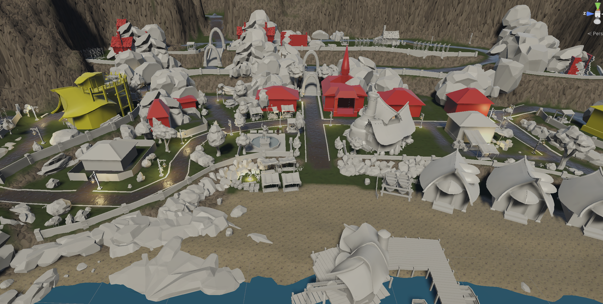
A town map blockout in-progress.